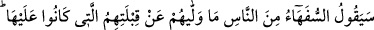
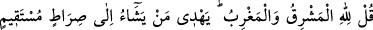
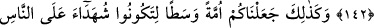
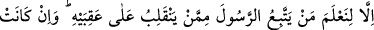
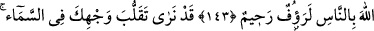
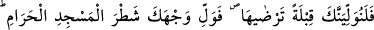
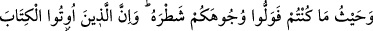
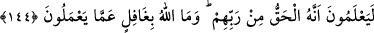
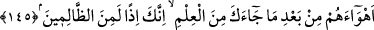
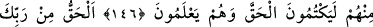
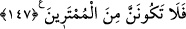
YÜZÜ MESCİD-İ HARAM’A
ÇEVİRMEK
142. İnsanlardan bir kısım beyinsizler: Yönelmekte oldukları kıblelerinden onları
çeviren nedir? diyecekler. De ki: doğu da batı da Allah’ındır. O dilediğini doğru yola
iletir.
143. İşte böylece sizin insanlığa şahidler olmanız, Rasûl’ün de size şahit olması
için sizi mûtedil bir millet kıldık. Senin (arzulayıp da şu anda) yönelmediğin kıbleyi
(Kâbe’yi) biz ancak Peygamber’e uyanı, ökçeleri üzerinde geri dönenden
ayırdetmemiz için kıble yaptık. Bu, Allah’ın hidâyet verdiği kimselerden başkasına
elbette ağır gelir. Allah sizin îmânınızı asla zâyi edecek değildir. Zira Allah
insanlara karşı şefkatli ve merhametlidir.
144. (Ey Muhammed!) Biz senin yüzünün göğe doğru çevrilmekte olduğunu